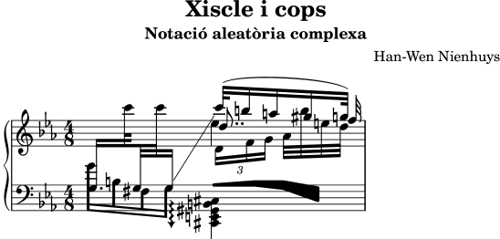

| [Top][Contents][Index] |
LilyPond — Assaig sobre gravat musical automatizat
|
Aquest assaig tracta de les funcions de gravat musical automatitzat dins del LilyPond versió 2.26.0. |
| 1 Gravat musical | ||
| 2 Llista de referències bibliogràfiques | ||
| Appendix A GNU Free Documentation License | Llicència d’aquest document. | |
| Appendix B Índex |
|
Per a més informació sobre la forma en la qual aquest manual es relaciona amb la resta de la documentació, o per llegir aquest manual en altres formats, consulteu Manuals. Si us falta algun manual, trobareu tota la documentació a https://lilypond.org/. |
| [ << Top ] | [Top][Contents][Index] | [ Llista de referències bibliogràfiques >> ] |
| [ < Top ] | [ Up: Top ] | [ La història del LilyPond > ] |
1 Gravat musical
Aquest capítol descriu perquè es va crear el LilyPond i com pot produir partitures musical tan boniques.
| 1.1 La història del LilyPond | ||
| 1.2 Detalls del gravat | ||
| 1.3 Gravat automàtic | ||
| 1.4 Construcció de programari | ||
| 1.5 Posant el LilyPond a treballar | ||
| 1.6 Exemples de gravat (BWV 861) |
| [ << Gravat musical ] | [Top][Contents][Index] | [ Llista de referències bibliogràfiques >> ] |
| [ < Gravat musical ] | [ Up: Gravat musical ] | [ Detalls del gravat > ] |
1.1 La història del LilyPond
Molt abans que el LilyPond s’hagués fet servir per gravar partitures boniques per a l’execució musical, abans que pogués crear apunts per a cursos universitaris o fins i tot simples melodies, abans que hi hagués una comunitat d’usuaris al voltant del món o fins i tot un assaig sobre el gravat musical, el LilyPond va començar amb una pregunta:
Perquè la major part de les partitures produïdes per ordinador fracassen d’aconseguir la bellesa i l’harmonia de les partitures gravades a mà?
Algunes de les respostes es poden trobar examinant les dues partitures a sota. La primera partitura és una bella partitura gravada a mà al 1950 i la segona és una edició moderna produïda per l’ordinador.
Bärenreiter BA 320, ©1950:

Henle no. 666, ©2000:

Les notes aquí són idèntiques, agafades de la primera Suite de Bach per a violoncel sol, però l’aspecte és diferent, especialment si les imprimiu i les mireu des d’una distància. (La versió PDF d’aquest manual té imatges d’alta resolució que són apropiades per a la impressió.) Intenteu llegir o executar des de cadascuna d’aquestes partitures i trobareu que la partitura escrita a mà és més agradable d’usar. Té línies fluïdes i moviment, i se sent com una peça de música viva i que respira, mentre que l’edició més nova sembla freda i mecànica.
És difícil veure immediatament perquè és diferent amb l’edició més nova. Tot es veu net i ajustat, fins i tot possiblement “millor” perquè és veu més mecànic i uniform. Això ens va generar perplexitat per un temps. Volíem millorar la notació per ordinador, però primer havíem d’esbrinar què és que no funcionava amb ella.
La resposta radica en la uniformitat precisa i matemàtica de l’edició més nova. Noteu la línia de compàs al mig de cada línia: a la partitura escrita a mà la posició d’aquestes línies de compàs té certa variació natural, mentre que en la versió més nova s’alineen gairebé de forma perfecta. Això es mostra en aquests diagrames simplificats de la disposició de pàgina dibuixats des de la música escrita a mà (esquerra) i l’escrita amb ordinador (dret):

A la partitura produïda per l’ordinador, fins i tot els caps de les notes individuals estan alineats en columnes verticals, fent que el contorn de la melodia desaparegui dins d’una graella rígida de marcacions musicals.
Hi ha també d’altres diferències: a l’edició gravada a mà les línies verticals són més fortes, les lligadures estan més a prop dels caps de les notes i hi ha més varietat en els pendents dels barrats. Tot i que aquests detalls puguin semblar primmirats, el resultat és una partitura que és més fàcil de llegir. A la partitura produïda per ordinador, cada línia és pràcticament idèntica i si la persona que ho llegeix desvia la vista per un moment, es perdrà a la pàgina.
El LilyPond es va dissenyar per resoldre els problemes que trobem al programari existent i per crear música bonica que imita les millors partitures escrites a mà.
| [ << Gravat musical ] | [Top][Contents][Index] | [ Llista de referències bibliogràfiques >> ] |
| [ < La història del LilyPond ] | [ Up: Gravat musical ] | [ Tipus de lletra per a música > ] |
1.2 Detalls del gravat
L’art de la tipografia musical es coneix com gravació (en plaques), un terme que es deriva del procés manual de la impressió de música1. Sols fa unes dècades, les partitures es feien tallant i estampant la música a una placa de zinc o peltre en una imatge mirall. A la placa se li posaria tinta, i les depressions causades pels talls i l’estampació contindrien tinta. Per fer una imatge, es pressionava el paper contra la placa. L’estampació i el tallat es feia completament a mà i fer una correcció era complex, per tant la gravació havia de ser pràcticament perfecta en un sol intent. La gravació era una destresa molt especialitzada; un gravador havia de completar al voltant de cinc anys d’entrenament abans d’obtenir el títol de mestre gravador, i uns altres cinc anys d’experiència calien per convertir-se en un gravador realment competent.

El LilyPond s’inspira per les gravacions manuals tradicional publicades per editors europeus de música durant la primera meitat del segle XX, incloent-hi Bärenreiter, Duhem, Durand, Hofmeister, Peters, i Schott. Això es contempla a vegades com el cim de la pràctica tradicional de gravació musical. A mesura que vam estudiar aquestes edicions vam aprendre molt sobre que és el que fa una partitura ben gravada, i els aspectes que volíem imitar al LilyPond.
| Tipus de lletra per a música | ||
| Espaiat òptic | ||
| Línies addicionals | ||
| Dimensionament òptic | ||
| Perquè treballar tan dur? |
| [ << Gravat musical ] | [Top][Contents][Index] | [ Llista de referències bibliogràfiques >> ] |
| [ < Detalls del gravat ] | [ Up: Detalls del gravat ] | [ Espaiat òptic > ] |
Tipus de lletra per a música
Les imatges a sota il·lustren algunes diferències entre la gravació tradicional i la sortida típica per ordinador. La figura a l’esquerra mostra un símbol bemoll escanejat d’una edició Bärenreiter feta a mà, mentre que la figura de l’esquerra mostra un símbol d’una edició de la mateixa música publicada al 2000. Tot i que les dues imatges s’imprimeixen amb la mateixa intensitat de tinta, la versió més antiga es veu més fosca: les línies de la partitura són més gruixudes, i el bemoll Bärenreiter té un aspecte pesat, gairebé voluptuosament arrodonit. La figura escaneja de la dreta, per una altra part, té línies més primes i una disposició estilitzada amb cantons precisos.
 |  | |
| Bärenreiter (1950) | Henle (2000) |
Quan volíem escriure un programa d’ordinador per crear tipografia musical, no hi havia cap tipus de lletra per a música disponible de manera gratuïta que pogués concordar l’elegància de les nostres partitures favorites. Sense que això ens frenés, vam crear un tipus de lletra de símbols musicals, basant-nos en impressions boniques de música gravada a mà. L’experiència ens va ajudar a desenvolupar un gust tipogràfic, i ens va fer apreciar detalls subtils de disseny. Sense aquesta experiència no es hauríem pogut adonar del lleig que eren els tipus de lletra que havíem admirat a l’inici.
A sota hi ha una mostra de dos tipus de lletra per a música: el conjunt superior és el tipus de lletra predeterminat del programa Sibelius (el tipus de lletra Opus, i el conjunt de sota és el nostre propi tipus de lletra LilyPond.

Els símbols LilyPond son més pesats i el seu pes és més consistent, cosa que fa que siguin més fàcil de llegir. Els finals fins, com ara els que hi ha al costat del silenci de negra, no haurien de finalitzar com punts afilats, sinó en formes arrodonides. Això és perquè els racons afilats dels tipus d’impremta són fràgils i es desgasten ràpidament quan s’utilitzen en metall. Però en conjunt, la foscor del tipus de lletra s’ha d’ajustar amb cura amb el gruixut de les línies, pliques i lligadures per dona una impressió general forta però a l’hora balancejada.
A més a més, noteu que el nostre cap de nota de les blanques no és el·líptic sinó amb una lleu forma de diamant. La plica vertical d’un símbol de bemoll està lleument dibuixat, fent-se més ampli en la part superior. El sostingut i el natural són més fàcils de distingir des d’una distància ja que les seves línies angulades tenen diferents pendents i els traços verticals són més pesats.
| [ << Gravat musical ] | [Top][Contents][Index] | [ Llista de referències bibliogràfiques >> ] |
| [ < Tipus de lletra per a música ] | [ Up: Detalls del gravat ] | [ Línies addicionals > ] |
Espaiat òptic
A l’espaiat, la distribució de l’espai hauria de reflectir les duracions entre notes. No obstant, com hem vist a la Suite de Bach a dalt, moltes partitures s’adhereixen a les duracions amb precisió matemàtica, cosa que porta a pitjors resultats. A l’exemple següent es presenta un motiu dos cops: el primer cop s’usa un espaiat matemàtic exacte, i el segon cop amb correccions. Quin preferiu?
![[image of music]](9a/lily-aeb8f62a.png)
![[image of music]](9a/lily-56d084bb.png)
Cada compàs al fragment sols usa notes que s’executen a un ritme constant. L’espaiat hauria de reflectir això. Desafortunadament, la vista ens enganya una mica; no sols nota la distància entre els caps de nota, sinó que també pren en consideració la distància entre pliques consecutives. Com a resultat, les notes d’una combinació de pliques cap amunt/cap avall s’haurien de posar més distants, i les nota d’una combinació cap avall/cap amunt s’haurien de posar més juntes, sempre depenent de les posicions verticals combinades de les notes. Els dos compassos inferiors s’imprimeixen amb aquesta correcció, els dos compassos superiors, en canvi, formen conjunts de notes de pliques Cap Avall/Cap Amunt.
Els algoritmes d’espaiat al LilyPond fins i tot prenen la línia de compàs, cosa que fa la plica cap amunt final a l’exemple rebi un espaiat més gran perquè no es vegi atapeït. A una plica cap avall no li caldria aquest ajustament.
| [ << Gravat musical ] | [Top][Contents][Index] | [ Llista de referències bibliogràfiques >> ] |
| [ < Espaiat òptic ] | [ Up: Detalls del gravat ] | [ Dimensionament òptic > ] |
Línies addicionals
Les línies addicionals presenten un desafiament tipogràfic: fan més difícil col·locar els símbols musicals junts a prop i han de ser suficientment clars per identificar l’altura a primera vista. A l’exemple de sota veiem que les línies addicionals haurien de ser més gruixudes que les línies normals del pentagrama i que un gravador expert farà més curtes les línies addicionals per permetre una col·locació més propera amb les alteracions. Hem inclòs aquesta funcionalitat al gravat del LilyPond.
 |  |
| [ << Gravat musical ] | [Top][Contents][Index] | [ Llista de referències bibliogràfiques >> ] |
| [ < Línies addicionals ] | [ Up: Detalls del gravat ] | [ Perquè treballar tan dur? > ] |
Dimensionament òptic
Potser cal imprimir la música en una diversitat de mides. Originalment, això es va aconseguir creant matrius de punxó a cadascuna de les mides requerides, el que va significar que cada punxó es va dissenyar per veure’s el millor possible a cada mida. Amb l’aparició de la tipografia digital, un esquema únic del tipus de lletra pot escalar-se matemàticament a qualsevol mida, cosa que és molt convenient, però a les mides més petites els glifs semblaran molt lleugers.
Al LilyPond, hem creat tipografies amb una varietat de pesos, en correspondència amb una diversitat de mides musicals. Això és un gravat del LilyPond a una mida del pentagrama de 26:

i això és el mateix gravat establert a una mida de pentagrama de 11, i després magnificat a 236% per imprimir a la mateixa mida de l’exemple anterior:

A les mides més petites, el LilyPond usa línies proporcionalment més pesades de manera que la música encara es podrà llegir bé.
Això permet que pentagrames de diferent mides convisquin en pau quan s’usen junts a la mateixa pàgina:
![[image of music]](78/lily-34c3a451.png)
| [ << Gravat musical ] | [Top][Contents][Index] | [ Llista de referències bibliogràfiques >> ] |
| [ < Dimensionament òptic ] | [ Up: Detalls del gravat ] | [ Gravat automàtic > ] |
Perquè treballar tan dur?
Els músics normalment estan més absorbits amb l’execució que en l’estudi de l’aparença de una peça musical, i per això el detalls tipogràfics puntetossos poden semblar acadèmics. Però no ho són. Les partitures musicals són material per a l’execució: tot es fa perquè els músics puguin tocar millor, i qualsevol cosa que sigui poc clara o poc agradable per llegir és un impediment.
Tradicionalment, la música gravada utilitza símbols en negreta sobre pentagrames ben marcats per crear una aparença forta i ben balancejada que es destaqui bé quan la música estigui lluny dels lectors: per exemple, si està sobre un faristol. Una distribució acurada d’espai blanc permet posar la música molt compacta sense amuntegar els símbols uns sobre els altres. El resultat minimitza el nombre de passos de pàgina, cosa que és un gran avantatge.
Això és una característica comuna de la tipografia. La disposició hauria de ser bonica, no sols per la bellesa en si mateixa, sinó especialment perquè ajuda als lectors en les seves tasques. Per a les partitures musicals això és d’una importància doble perquè els músics tenen una quantitat d’atenció limitada. Quanta menys atenció els calgui per a la lectura, més es poden enfocar en tocar la música. En altres paraules, una tipografia millor es tradueix en una execució millor.
Aquests exemples demostren que la tipografia musical és un art que és subtil i complex, i que la seva producció requereix una expertesa considerable, cosa que els musics normalment no tenen. El LilyPond és el nostre esforç per portar l’excel·lència gràfica de la música gravada a mà a l’era digital, i fer-la accessible als músics normals. Hem tunejat els nostres algoritmes, dissenys tipogràfics, i configuracions als programes per produir impressions que estan a l’alçada de la qualitat de les edicions antigues que estimem veure i usar per executar la música.
| [ << Gravat musical ] | [Top][Contents][Index] | [ Llista de referències bibliogràfiques >> ] |
| [ < Perquè treballar tan dur? ] | [ Up: Gravat musical ] | [ Concursos de bellesa > ] |
1.3 Gravat automàtic
Aquí descrivim què cal per crear el programari que reprodueixi la disposició de les partitures gravades: un mètode per descriure disposicions correctes a l’ordinador i un munt de comparacions detallades de gravats reals.
| Concursos de bellesa | ||
| Millores per comparació | ||
| Aconseguint que les coses siguin correctes |
| [ << Gravat musical ] | [Top][Contents][Index] | [ Llista de referències bibliogràfiques >> ] |
| [ < Gravat automàtic ] | [ Up: Gravat automàtic ] | [ Millores per comparació > ] |
Concursos de bellesa
Com fem en realitat les decisions de formatat? En altres paraules, quines de les tres disposicions hauríem d’escollir par a la lligadura següent?
![[image of music]](3f/lily-ac354203.png)
Hi ha alguns llibres disponibles sobre l’art del gravat musical. Desafortunadament, contenen regles senzilles i alguns exemples. Aquestes regles poden ser instructives, però estan molt lluny d’un algoritme que podríem posar directament en pràctica a un ordinador. Si seguim les instruccions de la literatura ens portaria a algoritmes amb moltes excepcions codificades a mà. Fer tot aquesta anàlisi de cas és molta feina, i sovint no tots els casos queden completament coberts:

(Font de la imatge: Ted Ross, The Art of Music Engraving)
En comptes d’intentar escriure disposicions detallades per cada possible escenari, sols hem de descriure els objectius suficientment bé perquè el LilyPond jutgi l’atractiu de diverses alternatives. Després, per a cada configuració possible calculem una nota de lletjor i escollim la configuració menys lletja.
Per exemple, a continuació hi ha tres possibles configuracions de lligadura d’expressió, i el LilyPond els ha donat a cadascuna una nota en ‘punts de lletjor’. El primer exemple rep 15.39 punts per ombrejar un dels caps de nota:
![[image of music]](a6/lily-891b625e.png)
El segon és més bonic, però la lligadura d’expressió no comença o finalitza als caps de les notes. Rep 1.71 punts per la part esquerra i 9.37 punts per la part dreta, i 2 punts més perquè la lligadura puja mentre que la melodia baixa per un total de 13.08 punts de lletjor:
![[image of music]](43/lily-f0f2135c.png)
La lligadura d’expressió final aconsegueix 10.04 punts per l’espai a la dreta i 2 punts pel pendent ascendent, però és la més atractiva de les tres configuracions, de manera que el LilyPond l’escull:
![[image of music]](a4/lily-8ec4148f.png)
Aquesta tècnica és força general, i es fa servir per fer decisions òptimes per a les configuracions de les pliques, les lligadures d’unió i els punts als acords, salts de línia, i salts de pàgina. Es poden jutjar els resultats d’aquestes decisions en comparació amb gravats reals.
| [ << Gravat musical ] | [Top][Contents][Index] | [ Llista de referències bibliogràfiques >> ] |
| [ < Concursos de bellesa ] | [ Up: Gravat automàtic ] | [ Aconseguint que les coses siguin correctes > ] |
Millores per comparació
La sortida del LilyPond ha millorat gradualment al llarg del temps, i continua millorant comparant la seva sortida amb partitures gravades a mà.
Per exemple, aquí hi ha una línia d’una peça de comparació d’una edició gravada a mà (Bärenreiter BA320):

i la mateixa cita tal com es va gravar amb una versió molt antiga del LilyPond (versió 1.4, Maig 2001):

La sortida del LilyPond 1.4 és certament llegible, però una comparació detallada amb la partitura gravada a mà va mostrar molts errors en els detalls de formatat:

- hi ha massa espai abans de l’indicador de temps
- les pliques de les notes enllaçades són massa llargues
- els compassos segon i quart són massa estrets
- la lligadura d’expressió es veu estranya
- les marques de trino són massa grans
- les pliques són massa fines
(També hi havia dos caps de nota que faltaven, diverses anotacions editorials que faltaven i una altura incorrecta!)
Amb l’ajustament de les regles de disposició i el disseny dels tipus de lletra, la sortida ha millorat considerablement. Compareu la mateixa partitura de referència i la sortida de la versió actual del LilyPond (2.26.0):
![[image of music]](ae/lily-c104c9b2.png)
La sortida actual no és idèntica a l’edició de referència, però està molt més a prop a la qualitat de publicació que la sortida anterior.
| [ << Gravat musical ] | [Top][Contents][Index] | [ Llista de referències bibliogràfiques >> ] |
| [ < Millores per comparació ] | [ Up: Gravat automàtic ] | [ Construcció de programari > ] |
Aconseguint que les coses siguin correctes
També podem mesurar la capacitat del LilyPond per fer decisions de gravació de música comparant la sortida del Lilypond amb la sortida d’un programari comercial. En aquest cas hem escollit el Finale 2008, que és un dels processadors d’edició musical més populars, particularment als Estats Units. Sibelius és el seu rival més important i és particularment fort al mercat europeu.
Per a la nostra comparació hem seleccionat la Fuga en sol menor el Clau Ben Temperat, llibre I, BWV 861, de Bach. El tema inicial és:
![[image of music]](77/lily-84b0de4f.png)
Vam fer la nostra comparació gravant els primers set compassos de l’obra (28–34 al Finale i al LilyPond. Aquesta és la part de la peça on el tema retorna al stretto en tres parts i introdueix la secció de tancament. A la versió del Finale, ens hem resistit a la temptació de fer ajustament a la sortida predeterminada atès que intentem mostrar les coses que cada programari fa correctament sense assistència. Les úniques edicions importants que vam fer va ser ajustar la mida de la pàgina per concordar amb aquest assaig i forçar la música dins de dos sistemes per facilitar la comparació. Per defecte, el Finale hauria gravat dos sistemes amb tres compassos cadascú i un sistema final d’amplada completa, contenint un compàs únic.
Moltes de les diferències dels dos gravats són visibles als compassos 28–29, com es mostra aquí amb Finale primer i Lilypond segon:

![[image of music]](b7/lily-b179776a.png)
Entre les limitacions de la sortida no editada del Finale es pot incloure:
- La major part de les pliques s’estenen més lluny que el pentagrama. Una plica que apunta cap al centre del pentagrama hauria de tenir una longitud d’aproximadament un octau, però els gravadors ho fan més curt quan la plica apunta cap a fora del pentagrama a la música amb moltes veus. La manera com el Finale gestiona les pliques es pot millorar fàcilment amb el seu connector Patterson Beams, però hem preferit saltar-nos aquest pas per a aquest example.
- Finale no ajusta les posicions dels caps de nota que se
superposen, cosa que fa extremadament difícil llegir la música
quan les veus superior i inferior canvien de posició temporalment:
![[image of music]](9f/lily-ca218ddd.png)
- Finale ha posat tots els silencis a alçades fixes sobre la partitura. L’usuari té la llibertat d’ajustar-ho com calgui, però el programa no intenta considerar el contingut de l’altra veu. Per casualitat, no hi ha col·lisions de veritat entre les notes i els silencis en aquest example, però això te més a veure amb les posicions de les notes que les posicions dels silencis. En altres paraules, Bach ha de rebre més crèdit per evitar una col·lisió completa que el Finale.
La intenció d’aquest exemple no és suggerir que el Finale no es pot usar per produir resultats amb qualitat de publicació. Al contrari, en mans d’un usuari qualificat, ho pot fer, però requereix coneixements professionals i temps. Una de les diferències fonamentals entre el LilyPond i els processadors de música comercials és que el LilyPond intenta reduir la quantitat d’intervenció humana a un mínim, mentre que altres paquets intenten proveir una interfície atractiva on fer aquest tipus d’edicions.
Un omissió particularment destacable que hem trobat al Final és un bemoll faltant al compàs 33:

El símbol de bemoll cal per cancel·lar el bequadre al mateix compàs, però el Finale l’ignora perquè apareix a una altra veu. De manera que, a més d’executar un connector de pliques i de verificar la separació entre els caps de nota i els silencis, l’usuari també ha de repassar cada compàs per alteracions entre veus per evitar que s’aturi una pràctica per culpa d’un error de gravat.
Si teniu interès d’examinar aquests exemples amb més detall, el fragment complete amb set compassos es pot trobar al final d’aquest assaig amb quatre gravats diferents publicats. Una examinació propera mostra que hi ha una mica de variació acceptable entre els gravats a mans, però que el LilyPond es compara relativament bé amb aquest rang acceptable. Encara hi ha algunes limitacions a la sortida del LilyPond, per exemple, sembla ser massa agressiva fent més curtes les pliques, de manera que hi ha lloc per més desenvolupament i ajustaments.
Òbviament, el gravat depèn del judici humà sobre l’aparença, per tant la intervenció humana no es pot reemplaçar completament. No obstant, la major part del treball avorrit es pot automatitzar. Si el Lilypond resol la major part de les situacions comunes correctament, això serà una millora molt gran sobre el programari existent. Al llarg dels anys, el programari es pot refinar per fer més i més coses automàticament, de manera que la intervenció manual es necessita cada cop menys. Als llocs on cal l’ajustament manual, l’estructura del LilyPond s’ha dissenyat amb aquesta flexibilitat en ment.
| [ << Gravat musical ] | [Top][Contents][Index] | [ Llista de referències bibliogràfiques >> ] |
| [ < Aconseguint que les coses siguin correctes ] | [ Up: Gravat musical ] | [ Representació de la música > ] |
1.4 Construcció de programari
Aquesta secció descriu algunes de les decisions de programació que hem fet quan es va dissenyar el LilyPond.
| Representació de la música | ||
| Quins símbols s’han de gravar? | ||
| Arquitectura flexible |
| [ << Gravat musical ] | [Top][Contents][Index] | [ Llista de referències bibliogràfiques >> ] |
| [ < Construcció de programari ] | [ Up: Construcció de programari ] | [ Quins símbols s’han de gravar? > ] |
Representació de la música
Idealment, el format d’entrada per a qualsevol sistema de formatat d’alt nivell és una descripció abstracte del contingut. En aquest cas, això seria la música mateixa. Això comporta un problema formidable: com podem definir el que és realment la música? En comptes de provar de trobar una resposta, hem revertit la pregunta. Creem un programa capaç de produir partitures de música, i ajustem el format perquè sigui el més apropiat possible. Quan el format no es pot simplificar més, per definició ens queda amb el contingut en sí mateix. El programa serveix com una definició formal del document de música.
La sintaxi és també la interfície d’usuari per al LilyPond, per tant és senzill d’escriure:
{
c'4 d'8
}
per crear una nota negra al C del mig (C1) i una corxera a la nota D per sobre de la C mitjana (D1).
![[image of music]](07/lily-861277bc.png)
A una escala microscòpica, una sintaxi així és fàcil d’usar. A una escala més gran, a la sintaxi també li cal estructura. De quina altra manera podeu escriure peces complexes com ara simfonies i òperes? L’estructura es forma pel concepte d’expressions musicals: combinant petits fragments de música amb fragments més grans, es pot expressar música més complexa. Per exemple
f'4![[image of music]](d7/lily-c5077621.png)
Es poden construir notes simultànies envoltant-les amb
<< and >>:
<<c4 d4 e4>>
![[image of music]](b9/lily-aca2fd36.png)
Aquesta expressió es posa en seqüència envoltant-les amb claus
{ … }:
{ f4 <<c4 d4 e4>> }
![[image of music]](90/lily-ca28e028.png)
Això de dalt també és una expressió, i per tant es pot combinar un
altre cop amb una altra expressió simultània (una blanca) usant
<<, \\, i >>:
<< g2 \\ { f4 <<c4 d4 e4>> } >>
![[image of music]](9f/lily-7541c0be.png)
Es poden especificar aquestes estructures recursives de manera neta i formal amb una gramàtica lliure de context. El codi a processar també es pot generar a partir d’aquesta gramàtica. En altres paraules, la sintaxi del LilyPond està definida de manera clara i no ambigua.
Les interfícies d’usuari i la sintaxi és el que la gent més veu i gestiona. Són en part una qüestió de gust, i també l’objecte de molta discussió. Tot i que les discussions sobre els gustos tenen el seu mèrit, no són massa productives. En la visió àmplia del LilyPond la importància de la sintaxi d’entrada és petita: la invenció de una sintaxi neta és fàcil, mentre que l’escriptura de un codi de formatat decent és molt més difícil. Això també s’il·lustra pel nombre de línies del components respectius: l’anàlisi del codi i la representació ocupa menys del 10% del codi font.
Quan es van dissenyar les estructures usades al LilyPond, vam prendre diverses decisions que són evident en altres programes. Considereu la naturalesa jeràrquica de la notació musical:
![[image of music]](25/lily-ae398361.png)
En aquest cas, hi ha altures agrupades dins d’acords que pertanyen a compassos, que pertanyen a pautes de la partitura. Això recorda a una estructura de capses niuades:

Desafortunadament l’estructura és rígida perquè està basada en alguns supòsits excessivament restrictius. Això queda clar si considerem un exemple musical més complicat:
![[image of music]](08/lily-b365ee9f.png)
En aquest exemple, les pautes comencen i acaben arbitràriament, les veus salten entre pautes i les pautes tenen diferents indicacions de temps. Molts programes de notació musical patirien per reproduir aquest exemple perquè estan construïts amb l’estructura de capses niuades. Amb el Lilypond, en canvi, hem intentat mantenir el format d’entrada i l’estructura el més flexible que sigui possible.
| [ << Gravat musical ] | [Top][Contents][Index] | [ Llista de referències bibliogràfiques >> ] |
| [ < Representació de la música ] | [ Up: Construcció de programari ] | [ Arquitectura flexible > ] |
Quins símbols s’han de gravar?
El procés de donar format decideix on posar els símbols. No obstant, això sols es pot fer un cop s’ha decidit quins símbols s’han d’imprimir – en altres paraules, quina notació usar.
La notació musical comuna és un sistema de gravació de música que ha evolucionat al llarg dels últims 1000 anys. La forma que es fa servir més habitualment data de principis del renaixement. Tot i que la forma bàsica (o sigui caps de nota sobre una pauta de 5 línies) no ha canviat, els detalls encara evolucionen per expressar les innovacions de la notació contemporània. En conseqüència, la notació musical comuna compren 500 anys de música. Les seves aplicacions van des de melodies monofòniques fins a contrapunts monstruosos per una gran orquestra.
Com podem agafar una bèstia de set caps com aquesta, i forçar-la
als confins d’un programa d’ordinador? La nostra solució és
dividir el problema de la notació (en comptes del gravat, és a dir
la tipografia) en trossos digestibles i programables: cada tipus
de símbol es gestionat en un mòdul separat, el que s’anomena un
connector. Cada connector és completament modular i independent,
de manera que es pot desenvolupar i millorar separadament.
Aquests connectors s’anomenen
gravadors, per analogia amb artesans que tradueixen les
idees musicals a símbols gràfics.
A l’exemple següent, comencem amb un connector per a caps de nota, el
Note_heads_engraver.
![[image of music]](20/lily-f6238559.png)
Després un connector Staff_symbol_engraver afegeix la pauta:
![[image of music]](34/lily-59fbb43e.png)
El gravador Clef_engraver defineix un punt de referència
per a la pauta,
![[image of music]](22/lily-30c70890.png)
i el gravadorStem_engraver afegeix les pliques:
![[image of music]](2d/lily-9866f91d.png)
Es notifica al gravador Stem_engraver que qualsevol cap de
nota que aparegui. Cada cop que es veu un cap de nota (o més, per
a un acord) es creat un objecte de plica i es connecta al cap de nota.
Afegint gravadors per a les pliques, les lligadures, els accents,
els accidents, les línies de barra, els indicadors de temps i de
clau, aconseguim un conjunt complet de notació.
![[image of music]](b0/lily-bb1310d3.png)
Aquest sistema funciona bé per a música monofònica, però que passa amb la polifonia? A la notació polifònica, una pauta pot ser compartida per moltes veus.
![[image of music]](2b/lily-66f813d0.png)
En aquesta situació, els accidents i la pauta es comparteixen, però les pliques, les lligadures, els ganxos, etc., són privats per a cada veu. Consegüentment, s’haurien d’agrupar els gravadors. Els gravadors per als caps de notes, les pliques, les lligadures, etc. van dins d’un grup anomenat ‘Context de veu’, mentre que els gravadors per a la clau, accidents, barres, etc., van en un grup anomenat ‘Context de pauta’. En el cas de la polifonia, un context únic de pauta conté més d’un context de veu. De manera similar, es poden posar contextos múltiples de pauta dins d’un únic context de partitura. El context de partitura és el context de nivell superior de la notació.
![[image of music]](c5/lily-6cf130f5.png)
Vegeu també
Referències internes: Contexts.
| [ << Gravat musical ] | [Top][Contents][Index] | [ Llista de referències bibliogràfiques >> ] |
| [ < Quins símbols s’han de gravar? ] | [ Up: Construcció de programari ] | [ Posant el LilyPond a treballar > ] |
Arquitectura flexible
Quan vam començar, vam escriure el programa LilyPond enterament en el llenguatge de programació C++; les funcionalitats del programa estaven gravades en pedra per als programadors. Això va demostrar-se insatisfactori per un nombre de raons:
- Quan el LilyPond fa errors, els usuaris han de cancel·lar les decisions de format. Consegüentment, l’usuari ha de tenir accés al motor de formatat. En conseqüència, no podem fixar les regles i les configuracions al moment de la compilació sinó que han de ser accessibles per als usuaris al moment de l’execució.
- El gravat és una qüestió de judici visual, i consegüentment una qüestió de gustos. Tot i que siguem coneixedors, els usuaris poden no estar d’acord amb les nostres decisions personals. Així, les definicions sobre l’estil de tipografia també han d’estar accessibles per a l’usuari.
- Finalment, contínuament estem refinant els algoritmes de format, per tant ens cal un enfoc flexible per a les regles. El llenguatge C++ força a un cert mètode d’agrupament de regles que no es pot aplicar directament al formatat de la notació musical.
Aquests problemes han estat adreçats integrant un interpretador per al llenguatge de programació Scheme i amb la reescriptura de parts del LilyPond amb Scheme. L’arquitectura actual de formatat està construïda en torn a la noció d’objectes gràfics, descrits per variables i funcions de l’Scheme. Aquesta arquitectura inclou regles de formatat, estil tipogràfic i decisions individuals de formatat. L’usuari té accés directe a la major part d’aquests controls.
Les variables de l’Scheme controlen les decisions de disposició. Per exemple, molts objectes gràfics tenen una variable de direcció que codifica l’elecció entre amunt i avall (o esquerra i dreta). Aquí veieu dos acords, amb accents i arpegis. Al primer acord, els objectes gràfics tenen direccions avall (o esquerra). El segon acord té totes les direccions cap amunt (dreta).
![[image of music]](16/lily-14c9be2b.png)
El procés de formatat d’una partitura consisteix en la lectura i l’escriptura d’objectes gràfics. Algunes variables tenen un valor preestablert. Per exemple, el gruix de moltes línies – una característica de l’estil tipogràfic – és una variable amb un valor preestablert. Podeu alterar aquest valor si voleu, donant-li a la vostra partitura una impressió tipogràfica diferent.
![[image of music]](c0/lily-c0bced13.png)
Les regles de formatat són també variables preestablertes: cada objecte té variables que contenen procediments. Aquests procediments realitzen el formatat real, i mitjançant la substitució d’algun procediments, podem canviar l’aparença dels objectes. A l’exemple següent la regla que governa quins objectes de caps de nota es fan servir per produir el símbol de cap de nota es canvia durant el fragment de música.
![[image of music]](b4/lily-519c5d5b.png)
| [ << Gravat musical ] | [Top][Contents][Index] | [ Llista de referències bibliogràfiques >> ] |
| [ < Arquitectura flexible ] | [ Up: Gravat musical ] | [ Exemples de gravat (BWV 861) > ] |
1.5 Posant el LilyPond a treballar
Hem escrit el LilyPond com un experiments sobre com condensar l’art del gravat de música en un programa d’ordinador. Gràcies a tot aquest dur treball, el programa pot fer-se servir ara per fer tasques útils. L’aplicació més simple és imprimir notes.
![[image of music]](c4/lily-06873309.png)
Afegint noms d’acords i la lletra obtenim un full guia (lead sheet).
![[image of music]](8b/lily-18483b3c.png)
També es pot imprimir notació polifònica i música per a piano. L’exemple següent combina construccions més exòtiques.

Els fragments que es mostren a dalt s’han escrit tots a mà, però això no és un requisit. Atès que la màquina de formatat és majorment automàtica, pot servir com un mitjà de sortida per a altres programes que manipulen música. Per exemple, es pot fer servir també per convertir bases de dades de fragments musicals a imatges per al seu ús a pàgines web i presentacions multimèdia.
Aquest manual també mostra una aplicació: el format d’entrada és
text, i per tant pot incrustar-se fàcilment en d’altres formats
basats en text com ara LaTeX, HTML, o en el case d’aquest
manual, Texinfo. Usant el programa lilypond-book,
que està inclòs al LilyPond, els fragments d’entrada poden
reemplaçar-se per imatges de música als fitxers de sortida PDF o
HTML resultants. Un altre example es l’extensió de tercers
OOoLilyPond per a l’OpenOffice.org o Libreoffice, cosa que fa
extremadament fàcil incrustar exemples musicals en documents.
Per a més exemples del LilyPond en acció, la documentació completa i el propi programa, vegeu la nostra pàgina web principal: www.lilypond.org.
| [ << Gravat musical ] | [Top][Contents][Index] | [ Llista de referències bibliogràfiques >> ] |
| [ < Posant el LilyPond a treballar ] | [ Up: Gravat musical ] | [ Llista de referències bibliogràfiques > ] |
1.6 Exemples de gravat (BWV 861)
Aquesta secció conté quatre gravats de referència i dues versions de gravat per ordinador de la Fuga en Sol Menor del Clavecí Ben Temperat de Bach, llibre I, BWV 861 (els últims set compassos).
Bärenreiter BA5070 (Neue Ausgabe Sämtlicher Werke, Serie V, Band 6.1, 1989):

Bärenreiter BA5070 (Neue Ausgabe Sämtlicher Werke, Serie V, Band 6.1, 1989), una font musical alternativa. A part de les diferències textuals, això mostra petites variacions en les decisions de gravat, fins i tot per part del mateix editor i la mateixa edició:

Breitkopf & Härtel, edited by Ferruccio Busoni (Wiesbaden, 1894), also available from the Petrucci Music Library (IMSLP #22081). Les annotacions editorials (digitació, aritculacions, etc.) s’han eliminat per a una comparació més clara amb les altres edicions aquí:

Bach-Gesellschaft edition (Leipzig, 1866), disponibles a la Music Library (IMSPL #02221):

Finale 2008:

LilyPond, version 2.26.0:
![[image of music]](3d/lily-46584b04.png)
| [ << Gravat musical ] | [Top][Contents][Index] | [ GNU Free Documentation License >> ] |
| [ < Exemples de gravat (BWV 861) ] | [ Up: Top ] | [ Llista bibliogràfica resumida > ] |
2 Llista de referències bibliogràfiques
A continuació presentem algunes llistes de referències que es fan servir al LilyPond.
| 2.1 Llista bibliogràfica resumida | ||
| 2.2 Llista bibliogràfica ampliada |
2.1 Llista bibliogràfica resumida
Si us cal aprendre més sobre la notació musical, li presentem a continuació alguns títols interessants que podeu llegir.
- Ignatzek 1995
Klaus Ignatzek, Die Jazzmethode für Klavier. Schott’s Söhne 1995. Mainz, Germany ISBN 3-7957-5140-3.
Instructiva introducció a la interpretació de Jazz al piano. Un dels primers capítols conté una panoràmica dels acords més comuns de la música de Jazz.
- Gerou 1996
Tom Gerou and Linda Lusk, Essential Dictionary of Music Notation. Alfred Publishing, Van Nuys CA ISBN 0-88284-768-6.
Una llista concisa i ordenada alfabèticament dels problemes de la composició tipogràfica i la notació musical, que abasta la major part dels casos més comuns.
- Gould 2011
Elaine Gould, Behind Bars: the Definitive Guide to Music Notation. Faber Music Ltd. ISBN 0-571-51456-1.
Hals über Kopf: Das Handbuch des Notensatzes. Edition Peters. ISBN 1843670488.
Una completa guia de les regles i convencions de la notació musical que cobreix des dels temes bàsics fins les tècniques més complexes i ofereix una fonamentació exhaustiva dels principis notacionals.
- Read 1968
Gardner Read, Music Notation: A Manual of Modern Practice. Taplinger Publishing, New York (2nd edition).
Una obra estàndard sobre notació musical.
- Ross 1987
Ted Ross, Teach yourself the art of music engraving and processing. Hansen House, Miami, Florida 1987.
Aquest llibre tracta del gravat musical, és a dir, composició tipogràfica professional. Conté instruccions sobre l’estampat, l’ús de les plomes i les convencions notacionals. També són interessants les seccions sobre els tecnicismes i la història de la reproducció.
- Schirmer 2001
The G.Schirmer/AMP Manual of Style and Usage. G.Schirmer/AMP, NY, 2001. (Aquest llibre es pot demanar al departament de lloguer).
Aquest manual se centra específicament en la preparació dels manuscrits per a la publicació per Schirmer. Discuteix molts detalls que no es poden trobar en altres llibres de notació més normals. També proporciona una bona idea sobre el que cal per portar la impressió fins la qualitat editorial.
- Stone 1980
-
Kurt Stone, Music Notation in the Twentieth Century. Norton, New York 1980.
Aquest llibre descriu la notació musical per a la música seriosa moderna, però comença amb una àmplia panoràmica de les pràctiques existents de la notació tradicional.
2.2 Llista bibliogràfica ampliada
Bibliografia sobre edició de música de la Universitat de Colorado
- Willi Apel. The notation of polyphonic music, 900-1600. Cambridge, Mass, 1953. Musical notation.
- Ernest Austin. The Story of Music Printing. Lowe and Brydone Printers, Ltd., London. subject: history of music printing and engraving.
- Anna Maria Busse Berger. Mensuration and proportion signs : origins and evolution. Clarendon Press, Oxford, England, 1993. subject: early notation.
- Roger Bowers. Music & Letters, volume 73. August 1992. Some reflection upon notation and proportion in Monteverdi’s mass and vespers.
- Paul Brainard. Current Musicology. Number 50. July-Dec 1992. Proportional notation in the music of Schutz and his contemporaries in the 17th Century.
- Carl Brandt and Clinton Roemer. Standardized Chord Symbol Notation. Roerick Music Co., Sherman Oaks, CA. subject: musical notation.
- Earle Brown. Musical Quarterly, volume 72. Spring 1986. The notation and performance of new music.
- John Cage. Notations. Something Else Press, New York, 1969. Music, Manuscripts, Facsimiles. Facsimiles of holographs from the Foundation for Contemporary Performance Arts, with text by 269 composers, but rearranged using chance operations.,V).
- J Carter. New Paths in Book Collecting. London, 1934. subject: history of music printing and engraving.
- F. Chrsander. A Sketch of the HIstory of Music printing, from the 15th to the 16th century. 18??. subject: history of music printing and engraving.
- Henry Cowell. Our Inadequate Notation. Modern Music, 4(3), 1927. subject: 20th century notation.
- Henry Cowell. New Musical Resources. Alfred A. Knopf, Inc., New York, 1930. subject: 20th century notation.
- O.F. Deutsch. Music Publishers’ Numbers. London, 1946. subject: history of music printing and engraving.
- Suzanne Eggleston. Notes. New periodicals, 51(2):657(7), Dec 1994. A list of new music periodicals covering the period Jun.-Dec. 1994. Includes aims, formats and a description of the contents of each listed periodical. Includes Music Notation News.
- Hubert Foss. Music Printing. Practical Printing and Binding. Oldhams Press Ltd., Long Acre, London. subject: musical notation.
- Jean Charles Francois. Writing without representation, and unreadable notation.. Perspectives of New Music, 30(1):6(15), Winter 1992. subject: Modern music has outgrown notation. While the computer is used to write down music with accuracy never before achieved, the range of modern sounds has surpassed the relevance of the computer...
- David Fuller. The Journal of Musicology, volume 7. Winter 1989. Notes and inegales unjoined: defending a definition. (written-out inequalities in music notation).
- Virginia Gaburo. Notation. Lingua Press, La Jolla, California, 1977. A Lecture about notation, new ideas about.
- Keith A Hamel. A design for music editing and printing software based on notational syntax. Perspectives of New Music, 27(1):70(14), Winter 1989.
- Archibald Jacob. Musical handwriting : or, How to put music on paper : A handbook for all musicians, professional and amateur. Oxford University Press, London, 1947. subject: Musical notation.
- Harold M Johnson. How to write music manuscript an exercise-method handbook for the music student, copyist, arranger, composer, teacher. Carl Fischer, Inc., New York, 1946. subject: Musical notation –Handbooks, manuals.
- David Evan Jones. Perspectives of New Music. 1990. Speech extrapolated. (includes notation).
- H King. Four Hundred Years of Music Printing. London, 1964. subject: history of music printing and engraving.
- A.H King. The 50th Anniversary of Music Printing. 1973.
- O Kinkeldey. Music And Music Printing in Incunabula. Papers of the Bibliographical Society of America, xxvi:89-118, 1932. subject: history of music printing and engraving.
- D.W. Krummel. Graphic Analysis in Application to Early American Engraved Music. Notes, xvi:213, 9 1958. subject: history of music printing and engraving.
- D.W Krummel. Oblong Format in Early Music Books. The Library, 5th ser., xxvi:312, 1971. subject: history of music printing and engraving.
- Jeffrey Lependorf. ?. Perspectives of New Music, 27(2):232(20), Summer 1989. Contemporary notation for the shakuhachi: a primer for composers. (Tradition and Renewal in the Music of Japan).
- G.A Marco. The Earliest Music Printers of Continental Europe: a Checklist of Facsimiles Illustrating Their Work. Charlottesville, Virginia, 1962. subject: history of music printing and engraving.
- K. Meyer and J O’Meara. The Printing of Music, 1473-1934. The Dolphin, ii:171–207, 1935. subject: history of music printing and engraving.
- Raymond Monelle. Comparative Literature, volume 41. Summer 1989. Music notation and the poetic foot.
- A Novello. Some Account of the Methods of Musick Printing, with Specimens of the Various Sizes of Moveable Types and of Other Matters. London, 1847. subject: history of music printing and engraving.
- C.B Oldman. Collecting Musical First Editions. London, 1934. subject: history of music printing and engraving.
- Carl Parrish. The Notation of Medieval Music. Carl Fischer, Inc., New York, 1946. subject: early notation.
- Carl Parrish. The notation of medieval music. Norton, New York, 1957. Musical notation.
- Harry Patch. Genesis of a Music. University of Wisconsin Press, Madison, 1949. subject: early notation.
- B Pattison. Notes on Early Music Printing. The Library, xix:389-421, 1939. subject: history of music printing and engraving.
- Sandra Pinegar. Current Musicology. Number 53. July 1993. The seeds of notation and music paleography.
- Richard Rastall. The notation of Western music : an introduction. St. Martin’s Press, New York, N.Y., 1982. Musical notation.
- Richard Rastall. Music & Letters, volume 74. November 1993. Equal Temperament Music Notation: The Ailler-Brennink Chromatic Notation. Results and Conclusions of the Music Notation Refor by the Chroma Foundation (book reviews).
- Howard Risatti. New Music Vocabulary. University of Illinois Press, Urbana, Illinois, 1975. A Guide to Notational Signs for Contemporary Music.
- Donald W. Krummel \& Stanley Sadie. Music Printing & Publishing. Macmillan Press, 1990. subject: musical notation.
- Norman E Smith. Current Musicology. Number 45-47. Jan-Dec 1990. The notation of fractio modi.
- W Squire. Notes on Early Music Printing. Bibliographica, iii(99), 1897. subject: history of music printing and engraving.
- Robert Steele. The Earliest English Music Printing. London, 1903. subject: history of music printing and engraving.
- Willy Tappolet. La Notation Musicale. Neuchâtel, Paris, 1947. subject: general notation.
- Leo Treitler. The Journal of Musicology, volume 10. Spring 1992. The unwritten and written transmission, of medieval chant and the start-up of musical notation. Notational practice developed in medieval music to address the written tradition for chant which interacted with the unwritten vocal tradition.
- unknown author. Pictorial History of Music Printing. H. and A. Selmer, Inc., Elhardt, Indiana. subject: history of music printing and engraving.
- M.L West. Music & Letters, volume 75. May 1994. The Babylonian musical notation and the Hurrian melodic texts. A new way of deciphering the ancient Babylonian musical notation.
- C.F. Abdy Williams. The Story of Notation. Charles Scribner’s Sons, New York, 1903. subject: general notation.
- Emmanuel Wintermitz. Musical Autographs from Monteverdi to Hindemith. Princeton University Press, Princeton, 1955. subject: history of music printing and engraving.
Bibliografia sobre notació per ordinador
- G. Assayaag and D. Timis. A Toolbox for music notation. In Proceedings of the 1986 International Computer Music Conference, 1986.
- M. Balaban. A Music Workstation Based on Multiple Hierarchical Views of Music. San Francisco, In Proceedings of the 1988 International Computer Music Conference, 1988.
- Alan Belkin. Macintosh Notation Software: Present and Future. Computer Music Journal, 18(1), 1994. Some music notation systems are analysed for ease of use, MIDI handling. The article ends with a plea for a standard notation format. HWN.
- Herbert Bielawa. Review of Sibelius 7. Computer Music Journal, 1993?. A raving review/tutorial of Sibelius 7 for Acorn. (And did they seriously program a RISC chip in ... assembler ?!) HWN.
- Dorothea Blostein and Lippold Haken. Justification of Printed Music. Communications of the ACM, J34(3):88-99, March 1991. This paper provides an overview of the algorithm used in LIME for spacing individual lines. HWN.
- Dorothea Blostein and Lippold Haken. The Lime Music Editor: A Diagram Editor Involving Complex Translations. Software Practice and Experience, 24(3):289–306, march 1994. A description of various conversions, decisions and issues relating to this interactive editor HWN.
- Nabil Bouzaiene, Loïc Le Gall, and Emmanuel Saint-James. Une bibliothèque pour la notation musicale baroque. LNCS. In EP ’98, 1998. Describes ATYS, an extension to Berlioz, that can mimick handwritten baroque style beams.
- Donald Byrd. A System for Music Printing by Computer. Computers and the Humanities, 8:161-72, 1974.
- Donald Byrd. Music Notation by Computer. PhD thesis, Indiana University, 1985. Describes the SMUT (sic) system for automated music printout.
- Donald Byrd. Music Notation Software and Intelligence. Computer Music Journal, 18(1):17–20, 1994. Byrd (author of Nightingale) shows four problematic fragments of notation, and rants about notation programs that try to exhibit intelligent behaviour. HWN.
- Walter B Hewlett and Eleanor Selfridge-Field. Directory of Computer Assisted Research in Musicology. . Annual editions since 1985, many containing surveys of music typesetting technology. SP.
- Alyssa Lamb. The University of Colorado Music Engraving page. 1996. Webpages about engraving (designed with finale users in mind) (sic) HWN.
- Roger B. Dannenberg. Music Representation: Issues, Techniques, and Systems. Computer Music Journal, 17(3), 1993. This article points to some problems and solutions with music representation. HWN.
- Michael Droettboom. Study of music Notation Description Languages. Technical Report, 2000. GUIDO and lilypond compared. LilyPond wins on practical issues as usability and availability of tools, GUIDO wins on implementation simplicity.
- R. F. Ericson. The DARMS Project: A status report. Computing in the humanities, 9(6):291–298, 1975. Gourlay [gourlay86] writes: A discussion of the design and potential uses of the DARMS music-description language.
- H.S. Field-Richards. Cadenza: A Music Description Language. Computer Music Journal, 17(4), 1993. A description through examples of a music entry language. Apparently it has no formal semantics. There is also no implementation of notation convertor. HWN.
- Miguel Filgueiras. Some Music Typesetting Algorithms. .
- Miguel Filgueiras and José Paulo Leal. Representation and manipulation of music documents in SceX. Electronic Publishing, 6(4):507–518, 1993.
- Miguel Filgueiras. Implementing a Symbolic Music Processing System. 1996.
- Eric Foxley. Music — A language for typesetting music scores. Software — Practice and Experience, 17(8):485-502, 1987. A paper on a simple TROFF preprocessor to typeset music.
- Loïc Le Gall. Création d’une police adaptée à la notation musicale baroque. Master’s thesis, École Estienne, 1997.
- Martin Gieseking. Code-basierte Generierung interaktiver Notengraphik. PhD thesis, Universität Osnabrück, 2001.
- David A. Gomberg. A Computer-Oriented System for Music Printing. PhD thesis, Washington University, 1975.
- David A. Gomberg. A Computer-oriented System for Music Printing. Computing and the Humanities, 11:63-80, march 1977. Gourlay [gourlay86] writes: "A discussion of the problems of representing the conventions of musical notation in computer algorithms.".
- John. S. Gourlay. A language for music printing. Communications of the ACM, 29(5):388–401, 1986. This paper describes the MusiCopy musicsetting system and an input language to go with it.
- John S. Gourlay, A. Parrish, D. Roush, F. Sola, and Y. Tien. Computer Formatting of Music. Technical Report OSU-CISRC-2/87-TR3, Department of Computer and Information Science, The Ohio State University, 1987. This paper discusses the development of algorithms for the formatting of musical scores (from abstract). It also appeared at PROTEXT III, Ireland 1986.
- John S. Gourlay. Spacing a Line of Music,. Technical Report OSU-CISRC-10/87-TR35, Department of Computer and Information Science, The Ohio State University, 1987.
- John Grøver. A computer-oriented description of Music Notation. Part III: Accidental Positioning. Technical Report 135, Department of informatics, University of Oslo, 1989. Placement of accidentals crystallised in an enormous set of rules. Same remarks as for [grover89-twovoices] applies.
- John Grøver. A computer-oriented description of Music Notation. Part I. The Symbol Inventory. Technical Report 133, Department of informatics, University of Oslo, 1989. The goal of this series of reports is a full description of music formatting. As these largely depend on parameters of fonts, it starts with a verbose description of music symbols. The subject is treated backwards: from general rules of typesetting the author tries to extract dimensions for characters, whereas the rules of typesetting (in a particular font) follow from the dimensions of the symbols. His symbols do not match (the stringent) constraints formulated by eg. [wanske].
- John Grøver. A computer-oriented description of Music Notation. Part II: Two Voice Sharing a Staff, Leger Line Rules, Dot Positioning. Technical Report 134, Department of informatics, University of Oslo, 1989. A lot rules for what is in the title are formulated. The descriptions are long and verbose. The verbosity shows that formulating specific rules is not the proper way to approach the problem. Instead, the formulated rules should follow from more general rules, similar to [parrish87-simultaneities].
- Lippold Haken and Dorothea Blostein. The Tilia Music Representation: Extensibility, Abstraction, and Notation Contexts for the Lime Music Editor. Computer Music Journal, 17(3):43–58, 1993.
- Lippold Haken and Dorothea Blostein. A New Algorithm for Horizontal Spacing of Printed Music. Banff, In International Computer Music Conference, pages 118-119, Sept 1995. This describes an algorithm which uses springs between adjacent columns.
- Wael A. Hegazy. On the Implementation of the MusiCopy Language Processor,. Technical Report OSU-CISRC-10/87-TR34, Department of Computer and Information Science, The Ohio State University, 1987. Describes the "parser" which converts MusiCopy MDL to MusiCopy Simultaneities and columns. MDL is short for Music Description Language [gourlay86]. It accepts music descriptions that are organised into measures filled with voices, which are filled with notes. The measures can be arranged simultaneously or sequentially. To address the 2-dimensionality, almost all constructs in MDL must be labeled. MDL uses begin/end markers for attribute values and spanners. Rightfully the author concludes that MusiCopy must administrate a "state" variable containing both properties and current spanning symbols. MusiCopy attaches graphic information to the objects constructed in the input: the elements of the input are partially complete graphic objects.
- Wael A. Hegazy and John S. Gourlay. Optimal line breaking in music. Technical Report OSU-CISRC-8/87-TR33, Department of Computer and Information Science, The Ohio State University,, 1987.
- Wael A. Hegazy and John S. Gourlay. (J. C. van Vliet, editor). Optimal line breaking in music. Cambridge University Press, In Proceedings of the International Conference on Electronic Publishing, Document Manipulation and Typography. Nice (France), April 1988.
- Walter B. Hewlett and Eleanor Selfridge-Field, editors. The Virtual Score; representation, retrieval and restoration. Computing in Musicology. MIT Press, 2001.
- H. H. Hoos, K. A. Hamel, K. Renz, and J. Kilian. The GUIDO Music Notation Format—A Novel Approach for Adequately Representing Score-level Music. In Proceedings of International Computer Music Conference, pages 451–454, 1998.
- Peter S. Langston. Unix music tools at Bellcore. Software — Practice and Experience, 20(S1):47–61, 1990. This paper deals with some command-line tools for music editing and playback.
- Dominique Montel. La gravure de la musique, lisibilité esthétique, respect de l’oevre. Lyon, In Musique \& Notations, 1997.
- Giovanni Müller. Interaktive Bearbeitung konventioneller Musiknotation. PhD thesis, Eidgenössische Technische Hochschule Zürich, 1990. This is about engraver-quality typesetting with computers. It accepts the axiom that notation is too difficult to generate automatically. The result is that a notation program should be a WYSIWYG editor that allows one to tweak everything.
- Han Wen Nienhuys and Jan Nieuwenhuizen. LilyPond, a system for automated music engraving. Firenze, In XIV Colloquium on Musical Informatics, pages 167–172, May 2003.
- Cindy Grande. NIFF6a Notation Interchange File Format. Grande Software Inc., 1995. Specs for NIFF, a reasonably comprehensive but binary format for notation HWN.
- Severo M. Ornstein and John Turner Maxwell III. Mockingbird: A Composer’s Amanuensis. Technical Report CSL-83-2, Xerox Palo Alto Research Center, 3333 Coyote Hill Road, Palo Alto, CA, 94304, January 1983.
- Severo M. Ornstein and John Turner Maxwell III. Mockingbird: A Composer’s Amanuensis. Byte, 9, January 1984. A discussion of an interactive and graphical computer system for music composition.
- Stephen Dowland Page. Computer Tools for Music Information Retrieval. PhD thesis, Dissertation University of Oxford, 1988. Don’t ask Stephen for a copy. Write to the Bodleian Library, Oxford, or to the British Library, instead. SP.
- Allen Parish, Wael A. Hegazy, John S. Gourlay, Dean K. Roush, and F. Javier Sola. MusiCopy: An automated Music Formatting System. Technical Report, 1987.
- A. Parrish and John S. Gourlay. Computer Formatting of Musical Simultaneities,. Technical Report OSU-CISRC-10/87-TR28, Department of Computer and Information Science, The Ohio State University, 1987. This note discusses placement of balls, stems, dots which occur at the same moment ("Simultaneity").
- Steven Powell. Music engraving today. Brichtmark, 2002. A "How Steven uses Finale" manual.
- Gary M. Rader. Creating Printed Music Automatically. Computer, 29(6):61–69, June 1996. Describes a system called MusicEase, and explains that it uses "constraints" (which go unexplained) to automatically position various elements.
- Kai Renz. Algorithms and data structures for a music notation system based on GUIDO music notation. PhD thesis, Universität Darmstadt, 2002.
- René Roelofs. Een Geautomatiseerd Systeem voor het Afdrukken van Muziek. Number 45327. Master’s thesis, Erasmus Universiteit Rotterdam, 1991. This dutch thesis describes a monophonic typesetting system, and focuses on the breaking algorithm, which is taken from Hegazy & Gourlay.
- Joseph Rothstein. Review of Passport Designs’ Encore Music Notation Software. Computer Music Journal, ?.
- Dean K. Roush. Using MusiCopy. Technical Report OSU-CISRC-18/87-TR31, Department of Computer and Information Science, The Ohio State University, 1987. User manual of MusiCopy.
- D. Roush. Music Formatting Guidelines. Technical Report OSU-CISRC-3/88-TR10, Department of Computer and Information Science, The Ohio State University, 1988. Rules on formatting music formulated for use in computers. Mainly distilled from [Ross] HWN.
- Eleanor Selfridge-Field, editor. Beyond MIDI: the handbook of musical codes. MIT Press, 1997. A description of various music interchange formats.
- Donald Sloan. Aspects of Music Representation in HyTime/SMDL. Computer Music Journal, 17(4), 1993. An introduction into HyTime and its score description variant SMDL. With a short example that is quite lengthy in SMDL.
- International Organization for Standardization~(ISO). Information Technology - Document Description and Processing Languages - Standard Music Description Language (SMDL). Number ISO/IEC DIS 10743. 1992.
- Leland Smith. Editing and Printing Music by Computer, volume 17. 1973. Gourlay [gourlay86] writes: A discussion of Smith’s music-printing system SCORE.
- F. Sola. Computer Design of Musical Slurs, Ties and Phrase Marks,. Technical Report OSU-CISRC-10/87-TR32, Department of Computer and Information Science, The Ohio State University, 1987. Overview of a procedure for generating slurs.
- F. Sola and D. Roush. Design of Musical Beams,. Technical Report OSU-CISRC-10/87-TR30, Department of Computer and Information Science, The Ohio State University, 1987. Calculating beam slopes HWN.
- Howard Wright. how to read and write tab: a guide to tab notation. . FAQ (with answers) about TAB, the ASCII variant of Tablature. HWN.
- Geraint Wiggins, Eduardo Miranda, Alaaaan Smaill, and Mitch Harris. A Framework for the evaluation of music representation systems. Computer Music Journal, 17(3), 1993. A categorisation of music representation systems (languages, OO systems etc) split into high level and low level expressiveness. The discussion of Charm and parallel processing for music representation is rather vague. HWN.
Bibliografia sobre gravat musical
- Harald Banter. Akkord Lexikon. Schott’s Söhne, Mainz, Germany, 1987. Comprehensive overview of commonly used chords. Suggests (and uses) a unification for all different kinds of chord names.
- A Barksdale. The Printed Note: 500 Years of Music Printing and Engraving. The Toledo Museum of Art, Toledo, Ohio, January 1957. ‘The exhibition "The Printed Note" attempts to show the various processes used since the second of the 15th century for reproducing music mechanically ... ’. The illustration mostly feature ancient music.
- Laszlo Boehm. Modern Music Notation. G. Schirmer, Inc., New York, 1961. Heussenstamm writes: A handy compact reference book in basic notation.
- H. Elliot Button. System in Musical Notation. Novello and co., London, 1920.
- Herbert Chlapik. Die Praxis des Notengraphikers. Doblinger, 1987. An clearly written book for the casually interested reader. It shows some of the conventions and difficulties in printing music HWN.
- Anthony Donato. Preparing Music Manuscript. Prentice-Hall, Englewood Cliffs, NJ, 1963.
- Donemus. Uitgeven van muziek. Donemus Amsterdam, 1982. Manual on copying for composers and copyists at the Dutch publishing house Donemus. Besides general comments on copying, it also contains a lot of hands-on advice for making performance material for modern pieces.
- William Gamble. Music Engraving and printing. Historical and Technical Treatise. Sir Isaac Pitman & Sons, ltd., 1923. This patriotic book was an attempt to promote and help British music engravers. It is somewhat similar to Hader’s book [hader48] in scope and style, but Gamble focuses more on technical details (Which French punch cutters are worth buying from, etc.), and does not treat typographical details, such as optical illusions. It is available as reprint from Da Capo Press, New York (1971).
- Tom Gerou and Linda Lusk. Essential Dictionary of Music Notation. Alfred Publishing, Van Nuys CA, 1996. A cheap, concise, alphabetically ordered list of typesetting and music (notation) issues with a rather simplistic attitude but in most cases "good-enough" answers JCN.
- Elaine Gould. Behind Bars. Faber Music Ltd., 2011. A comprehensive guide to the rules and conventions of music notation. Covering everything from basic themes to complex techniques and providing a comprehensive grounding in notational principles.
- Elaine Gould. Hals über Kopf. Edition Peters, 2014. Ein vollständiges Regelwerk für den Modernen Notensatz auf höchstem Niveau, ein Meilenstein der Notationskunde und ein Leitfaden für jeden Musiker, der sich auf diesem Gebiet umfassende Kenntnisse aneignen möchte.
- Karl Hader. Aus der Werkstatt eines Notenstechers. Waldheim–Eberle Verlag, Vienna, 1948. Hader was a chief-engraver in a Viennese engraving workshop. This beautiful booklet was intended as an introduction for laymen on the art of engraving. It contains a step by step, in-depth explanation of how to cut and stamp music into zinc plates. It also contains a few compactly formulated rules on musical orthography. Out of print.
- George Heussenstamm. The Norton Manual of Music Notation. Norton, New York, 1987. Hands-on instruction book for copying (ie. handwriting) music. Fairly complete. HWN.
- Klaus Ignatzek. Die Jazzmethode für Klavier 1. Schott, 1995. This book contains a system for denoting chords that is used in LilyPond.
- Andreas Jaschinski, editor. Notation. Number BVK1625. Bärenreiter Verlag, 2000.
- Harold Johnson. How to write music manuscript. Carl Fischer, Inc., New York, 1946.
- Erdhard Karkoshka. Notation in New Music; a critical guide to interpretation and realisation. Praeger Publishers, New York, 1972. (Out of print).
- Mark Mc Grain. Music notation. Hal Leonard Publishing Corporation, 1991. HWN writes: ‘Book’ edition of lecture notes from XXX school of music. The book looks like it is xeroxed from bad printouts. The content has nothing you won’t find in other books like [read] or [heussenstamm].
- mpa. Standard music notation specifications for computer programming.. MPA, December 1996. Pamphlet explaining a few fine points in music font design HWN.
- Richard Rastall. The Notation of Western Music: an Introduction. J. M. Dent \& Sons London, 1983. Interesting account of the evolution and origin of common notation starting from neumes, and ending with modern innovations HWN.
- Gardner Read. Modern Rhythmic Notation. Indiana University Press, 1978. Sound (boring) review of the various hairy rhythmic notations used by avant-garde composers HWN.
- Gardner Read. Music Notation: a Manual of Modern Practice. Taplinger Publishing, New York, 1979. This is as close to the “standard” reference work for music notation issues as one is likely to get.
- Clinton Roemer. The Art of Music Copying. Roerick music co., Sherman Oaks (CA), 2nd edition, 1984. Out of print. Heussenstamm writes: an instructional manual which specializes in methods used in the commercial field.
- Glen Rosecrans. Music Notation Primer. Passantino, New York, 1979. Heussenstamm writes: Limited in scope, similar to [Roemer84].
- Carl A Rosenthal. A Practical Guide to Music Notation. MCA Music, New York, 1967. Heussenstamm writes: Informative in terms of traditional notation. Does not concern score preparation.
- Ted Ross. Teach yourself the art of music engraving and processing. Hansen House, Miami, Florida, 1987.
- Schirmer. The G. Schirmer Manual of Style and Usage. The G. Schirmer Publications Department, New York, 2001. This is the style guide for Schirmer publications. This manual specifically focuses on preparing print for publication by Schirmer. It discusses many details that are not in other, normal notation books. It also gives a good idea of what is necessary to bring printouts to publication quality. It can be ordered from the rental department.
- Kurt Stone. Music Notation in the Twentieth Century. Norton, New York, 1980. Heussenstamm writes: The most important book on notation in recent years.
- Börje Tyboni. Noter Handbok I Traditionell Notering. Gehrmans Musikförlag, Stockholm, 1994. Swedish book on music notation.
- Albert C. Vinci. Fundamentals of Traditional Music Notation. Kent State University Press, 1989.
- Helene Wanske. Musiknotation — Von der Syntax des Notenstichs zum EDV-gesteuerten Notensatz. Schott-Verlag, Mainz, 1988.
- Maxwell Weaner and Walter Boelke. Standard Music Notation Practice. Music Publisher’s Association of the United States Inc, New York, 1993.
- Johannes Wolf. Handbuch der Notationskunde. Breitkopf & Hartel, Leipzig, 1919. Very thorough treatment (in two volumes) of the history of music notation.
| [ << Llista de referències bibliogràfiques ] | [Top][Contents][Index] | [ Índex >> ] |
| [ < Llista bibliogràfica ampliada ] | [ Up: Top ] | [ Índex > ] |
Appendix A GNU Free Documentation License
Copyright © 2000, 2001, 2002, 2007, 2008 Free Software Foundation, Inc. https://fsf.org/ Everyone is permitted to copy and distribute verbatim copies of this license document, but changing it is not allowed.
- PREAMBLE
The purpose of this License is to make a manual, textbook, or other functional and useful document free in the sense of freedom: to assure everyone the effective freedom to copy and redistribute it, with or without modifying it, either commercially or noncommercially. Secondarily, this License preserves for the author and publisher a way to get credit for their work, while not being considered responsible for modifications made by others.
This License is a kind of “copyleft”, which means that derivative works of the document must themselves be free in the same sense. It complements the GNU General Public License, which is a copyleft license designed for free software.
We have designed this License in order to use it for manuals for free software, because free software needs free documentation: a free program should come with manuals providing the same freedoms that the software does. But this License is not limited to software manuals; it can be used for any textual work, regardless of subject matter or whether it is published as a printed book. We recommend this License principally for works whose purpose is instruction or reference.
- APPLICABILITY AND DEFINITIONS
This License applies to any manual or other work, in any medium, that contains a notice placed by the copyright holder saying it can be distributed under the terms of this License. Such a notice grants a world-wide, royalty-free license, unlimited in duration, to use that work under the conditions stated herein. The “Document”, below, refers to any such manual or work. Any member of the public is a licensee, and is addressed as “you”. You accept the license if you copy, modify or distribute the work in a way requiring permission under copyright law.
A “Modified Version” of the Document means any work containing the Document or a portion of it, either copied verbatim, or with modifications and/or translated into another language.
A “Secondary Section” is a named appendix or a front-matter section of the Document that deals exclusively with the relationship of the publishers or authors of the Document to the Document’s overall subject (or to related matters) and contains nothing that could fall directly within that overall subject. (Thus, if the Document is in part a textbook of mathematics, a Secondary Section may not explain any mathematics.) The relationship could be a matter of historical connection with the subject or with related matters, or of legal, commercial, philosophical, ethical or political position regarding them.
The “Invariant Sections” are certain Secondary Sections whose titles are designated, as being those of Invariant Sections, in the notice that says that the Document is released under this License. If a section does not fit the above definition of Secondary then it is not allowed to be designated as Invariant. The Document may contain zero Invariant Sections. If the Document does not identify any Invariant Sections then there are none.
The “Cover Texts” are certain short passages of text that are listed, as Front-Cover Texts or Back-Cover Texts, in the notice that says that the Document is released under this License. A Front-Cover Text may be at most 5 words, and a Back-Cover Text may be at most 25 words.
A “Transparent” copy of the Document means a machine-readable copy, represented in a format whose specification is available to the general public, that is suitable for revising the document straightforwardly with generic text editors or (for images composed of pixels) generic paint programs or (for drawings) some widely available drawing editor, and that is suitable for input to text formatters or for automatic translation to a variety of formats suitable for input to text formatters. A copy made in an otherwise Transparent file format whose markup, or absence of markup, has been arranged to thwart or discourage subsequent modification by readers is not Transparent. An image format is not Transparent if used for any substantial amount of text. A copy that is not “Transparent” is called “Opaque”.
Examples of suitable formats for Transparent copies include plain ASCII without markup, Texinfo input format, LaTeX input format, SGML or XML using a publicly available DTD, and standard-conforming simple HTML, PostScript or PDF designed for human modification. Examples of transparent image formats include PNG, XCF and JPG. Opaque formats include proprietary formats that can be read and edited only by proprietary word processors, SGML or XML for which the DTD and/or processing tools are not generally available, and the machine-generated HTML, PostScript or PDF produced by some word processors for output purposes only.
The “Title Page” means, for a printed book, the title page itself, plus such following pages as are needed to hold, legibly, the material this License requires to appear in the title page. For works in formats which do not have any title page as such, “Title Page” means the text near the most prominent appearance of the work’s title, preceding the beginning of the body of the text.
The “publisher” means any person or entity that distributes copies of the Document to the public.
A section “Entitled XYZ” means a named subunit of the Document whose title either is precisely XYZ or contains XYZ in parentheses following text that translates XYZ in another language. (Here XYZ stands for a specific section name mentioned below, such as “Acknowledgements”, “Dedications”, “Endorsements”, or “History”.) To “Preserve the Title” of such a section when you modify the Document means that it remains a section “Entitled XYZ” according to this definition.
The Document may include Warranty Disclaimers next to the notice which states that this License applies to the Document. These Warranty Disclaimers are considered to be included by reference in this License, but only as regards disclaiming warranties: any other implication that these Warranty Disclaimers may have is void and has no effect on the meaning of this License.
- VERBATIM COPYING
You may copy and distribute the Document in any medium, either commercially or noncommercially, provided that this License, the copyright notices, and the license notice saying this License applies to the Document are reproduced in all copies, and that you add no other conditions whatsoever to those of this License. You may not use technical measures to obstruct or control the reading or further copying of the copies you make or distribute. However, you may accept compensation in exchange for copies. If you distribute a large enough number of copies you must also follow the conditions in section 3.
You may also lend copies, under the same conditions stated above, and you may publicly display copies.
- COPYING IN QUANTITY
If you publish printed copies (or copies in media that commonly have printed covers) of the Document, numbering more than 100, and the Document’s license notice requires Cover Texts, you must enclose the copies in covers that carry, clearly and legibly, all these Cover Texts: Front-Cover Texts on the front cover, and Back-Cover Texts on the back cover. Both covers must also clearly and legibly identify you as the publisher of these copies. The front cover must present the full title with all words of the title equally prominent and visible. You may add other material on the covers in addition. Copying with changes limited to the covers, as long as they preserve the title of the Document and satisfy these conditions, can be treated as verbatim copying in other respects.
If the required texts for either cover are too voluminous to fit legibly, you should put the first ones listed (as many as fit reasonably) on the actual cover, and continue the rest onto adjacent pages.
If you publish or distribute Opaque copies of the Document numbering more than 100, you must either include a machine-readable Transparent copy along with each Opaque copy, or state in or with each Opaque copy a computer-network location from which the general network-using public has access to download using public-standard network protocols a complete Transparent copy of the Document, free of added material. If you use the latter option, you must take reasonably prudent steps, when you begin distribution of Opaque copies in quantity, to ensure that this Transparent copy will remain thus accessible at the stated location until at least one year after the last time you distribute an Opaque copy (directly or through your agents or retailers) of that edition to the public.
It is requested, but not required, that you contact the authors of the Document well before redistributing any large number of copies, to give them a chance to provide you with an updated version of the Document.
- MODIFICATIONS
You may copy and distribute a Modified Version of the Document under the conditions of sections 2 and 3 above, provided that you release the Modified Version under precisely this License, with the Modified Version filling the role of the Document, thus licensing distribution and modification of the Modified Version to whoever possesses a copy of it. In addition, you must do these things in the Modified Version:
- Use in the Title Page (and on the covers, if any) a title distinct from that of the Document, and from those of previous versions (which should, if there were any, be listed in the History section of the Document). You may use the same title as a previous version if the original publisher of that version gives permission.
- List on the Title Page, as authors, one or more persons or entities responsible for authorship of the modifications in the Modified Version, together with at least five of the principal authors of the Document (all of its principal authors, if it has fewer than five), unless they release you from this requirement.
- State on the Title page the name of the publisher of the Modified Version, as the publisher.
- Preserve all the copyright notices of the Document.
- Add an appropriate copyright notice for your modifications adjacent to the other copyright notices.
- Include, immediately after the copyright notices, a license notice giving the public permission to use the Modified Version under the terms of this License, in the form shown in the Addendum below.
- Preserve in that license notice the full lists of Invariant Sections and required Cover Texts given in the Document’s license notice.
- Include an unaltered copy of this License.
- Preserve the section Entitled “History”, Preserve its Title, and add to it an item stating at least the title, year, new authors, and publisher of the Modified Version as given on the Title Page. If there is no section Entitled “History” in the Document, create one stating the title, year, authors, and publisher of the Document as given on its Title Page, then add an item describing the Modified Version as stated in the previous sentence.
- Preserve the network location, if any, given in the Document for public access to a Transparent copy of the Document, and likewise the network locations given in the Document for previous versions it was based on. These may be placed in the “History” section. You may omit a network location for a work that was published at least four years before the Document itself, or if the original publisher of the version it refers to gives permission.
- For any section Entitled “Acknowledgements” or “Dedications”, Preserve the Title of the section, and preserve in the section all the substance and tone of each of the contributor acknowledgements and/or dedications given therein.
- Preserve all the Invariant Sections of the Document, unaltered in their text and in their titles. Section numbers or the equivalent are not considered part of the section titles.
- Delete any section Entitled “Endorsements”. Such a section may not be included in the Modified Version.
- Do not retitle any existing section to be Entitled “Endorsements” or to conflict in title with any Invariant Section.
- Preserve any Warranty Disclaimers.
If the Modified Version includes new front-matter sections or appendices that qualify as Secondary Sections and contain no material copied from the Document, you may at your option designate some or all of these sections as invariant. To do this, add their titles to the list of Invariant Sections in the Modified Version’s license notice. These titles must be distinct from any other section titles.
You may add a section Entitled “Endorsements”, provided it contains nothing but endorsements of your Modified Version by various parties—for example, statements of peer review or that the text has been approved by an organization as the authoritative definition of a standard.
You may add a passage of up to five words as a Front-Cover Text, and a passage of up to 25 words as a Back-Cover Text, to the end of the list of Cover Texts in the Modified Version. Only one passage of Front-Cover Text and one of Back-Cover Text may be added by (or through arrangements made by) any one entity. If the Document already includes a cover text for the same cover, previously added by you or by arrangement made by the same entity you are acting on behalf of, you may not add another; but you may replace the old one, on explicit permission from the previous publisher that added the old one.
The author(s) and publisher(s) of the Document do not by this License give permission to use their names for publicity for or to assert or imply endorsement of any Modified Version.
- COMBINING DOCUMENTS
You may combine the Document with other documents released under this License, under the terms defined in section 4 above for modified versions, provided that you include in the combination all of the Invariant Sections of all of the original documents, unmodified, and list them all as Invariant Sections of your combined work in its license notice, and that you preserve all their Warranty Disclaimers.
The combined work need only contain one copy of this License, and multiple identical Invariant Sections may be replaced with a single copy. If there are multiple Invariant Sections with the same name but different contents, make the title of each such section unique by adding at the end of it, in parentheses, the name of the original author or publisher of that section if known, or else a unique number. Make the same adjustment to the section titles in the list of Invariant Sections in the license notice of the combined work.
In the combination, you must combine any sections Entitled “History” in the various original documents, forming one section Entitled “History”; likewise combine any sections Entitled “Acknowledgements”, and any sections Entitled “Dedications”. You must delete all sections Entitled “Endorsements.”
- COLLECTIONS OF DOCUMENTS
You may make a collection consisting of the Document and other documents released under this License, and replace the individual copies of this License in the various documents with a single copy that is included in the collection, provided that you follow the rules of this License for verbatim copying of each of the documents in all other respects.
You may extract a single document from such a collection, and distribute it individually under this License, provided you insert a copy of this License into the extracted document, and follow this License in all other respects regarding verbatim copying of that document.
- AGGREGATION WITH INDEPENDENT WORKS
A compilation of the Document or its derivatives with other separate and independent documents or works, in or on a volume of a storage or distribution medium, is called an “aggregate” if the copyright resulting from the compilation is not used to limit the legal rights of the compilation’s users beyond what the individual works permit. When the Document is included in an aggregate, this License does not apply to the other works in the aggregate which are not themselves derivative works of the Document.
If the Cover Text requirement of section 3 is applicable to these copies of the Document, then if the Document is less than one half of the entire aggregate, the Document’s Cover Texts may be placed on covers that bracket the Document within the aggregate, or the electronic equivalent of covers if the Document is in electronic form. Otherwise they must appear on printed covers that bracket the whole aggregate.
- TRANSLATION
Translation is considered a kind of modification, so you may distribute translations of the Document under the terms of section 4. Replacing Invariant Sections with translations requires special permission from their copyright holders, but you may include translations of some or all Invariant Sections in addition to the original versions of these Invariant Sections. You may include a translation of this License, and all the license notices in the Document, and any Warranty Disclaimers, provided that you also include the original English version of this License and the original versions of those notices and disclaimers. In case of a disagreement between the translation and the original version of this License or a notice or disclaimer, the original version will prevail.
If a section in the Document is Entitled “Acknowledgements”, “Dedications”, or “History”, the requirement (section 4) to Preserve its Title (section 1) will typically require changing the actual title.
- TERMINATION
You may not copy, modify, sublicense, or distribute the Document except as expressly provided under this License. Any attempt otherwise to copy, modify, sublicense, or distribute it is void, and will automatically terminate your rights under this License.
However, if you cease all violation of this License, then your license from a particular copyright holder is reinstated (a) provisionally, unless and until the copyright holder explicitly and finally terminates your license, and (b) permanently, if the copyright holder fails to notify you of the violation by some reasonable means prior to 60 days after the cessation.
Moreover, your license from a particular copyright holder is reinstated permanently if the copyright holder notifies you of the violation by some reasonable means, this is the first time you have received notice of violation of this License (for any work) from that copyright holder, and you cure the violation prior to 30 days after your receipt of the notice.
Termination of your rights under this section does not terminate the licenses of parties who have received copies or rights from you under this License. If your rights have been terminated and not permanently reinstated, receipt of a copy of some or all of the same material does not give you any rights to use it.
- FUTURE REVISIONS OF THIS LICENSE
The Free Software Foundation may publish new, revised versions of the GNU Free Documentation License from time to time. Such new versions will be similar in spirit to the present version, but may differ in detail to address new problems or concerns. See https://www.gnu.org/licenses/.
Each version of the License is given a distinguishing version number. If the Document specifies that a particular numbered version of this License “or any later version” applies to it, you have the option of following the terms and conditions either of that specified version or of any later version that has been published (not as a draft) by the Free Software Foundation. If the Document does not specify a version number of this License, you may choose any version ever published (not as a draft) by the Free Software Foundation. If the Document specifies that a proxy can decide which future versions of this License can be used, that proxy’s public statement of acceptance of a version permanently authorizes you to choose that version for the Document.
- RELICENSING
“Massive Multiauthor Collaboration Site” (or “MMC Site”) means any World Wide Web server that publishes copyrightable works and also provides prominent facilities for anybody to edit those works. A public wiki that anybody can edit is an example of such a server. A “Massive Multiauthor Collaboration” (or “MMC”) contained in the site means any set of copyrightable works thus published on the MMC site.
“CC-BY-SA” means the Creative Commons Attribution-Share Alike 3.0 license published by Creative Commons Corporation, a not-for-profit corporation with a principal place of business in San Francisco, California, as well as future copyleft versions of that license published by that same organization.
“Incorporate” means to publish or republish a Document, in whole or in part, as part of another Document.
An MMC is “eligible for relicensing” if it is licensed under this License, and if all works that were first published under this License somewhere other than this MMC, and subsequently incorporated in whole or in part into the MMC, (1) had no cover texts or invariant sections, and (2) were thus incorporated prior to November 1, 2008.
The operator of an MMC Site may republish an MMC contained in the site under CC-BY-SA on the same site at any time before August 1, 2009, provided the MMC is eligible for relicensing.
ADDENDUM: How to use this License for your documents
To use this License in a document you have written, include a copy of the License in the document and put the following copyright and license notices just after the title page:
Copyright (C) year your name. Permission is granted to copy, distribute and/or modify this document under the terms of the GNU Free Documentation License, Version 1.3 or any later version published by the Free Software Foundation; with no Invariant Sections, no Front-Cover Texts, and no Back-Cover Texts. A copy of the license is included in the section entitled ``GNU Free Documentation License''.
If you have Invariant Sections, Front-Cover Texts and Back-Cover Texts, replace the “with…Texts.” line with this:
with the Invariant Sections being list their titles, with
the Front-Cover Texts being list, and with the Back-Cover Texts
being list.
If you have Invariant Sections without Cover Texts, or some other combination of the three, merge those two alternatives to suit the situation.
If your document contains nontrivial examples of program code, we recommend releasing these examples in parallel under your choice of free software license, such as the GNU General Public License, to permit their use in free software.
| [ << GNU Free Documentation License ] | [Top][Contents][Index] | [ >> ] |
| [ < GNU Free Documentation License ] | [ Up: Top ] | [ > ] |
Appendix B Índex
| Jump to: | B C D E F G L P R S T |
|---|
| Jump to: | B C D E F G L P R S T |
|---|
| [Top][Contents][Index] |
Table of Contents
Footnotes
(1)
Els impressors primerencs europeus exploraren diversos processos, incloent-hi blocs de fusta gravats a mà, tipus movibles i fulles gravades de metall fi. La composició tipogràfica tenia l’avantatge que es podia corregir més fàcilment i facilitava la inclusió de text i versos, però sols la gravació oferia l’habilitat de una disposició sense restriccions i una notació no anticipada. Al final, les partitures gravades a mà van convertir-se en estàndard per a tota la música impresa, amb l’excepció d’alguns himnes i cançoners on la composició tipogràfica estava justificada per la seva facilitat i economia, fins i tot durant el segle XX.